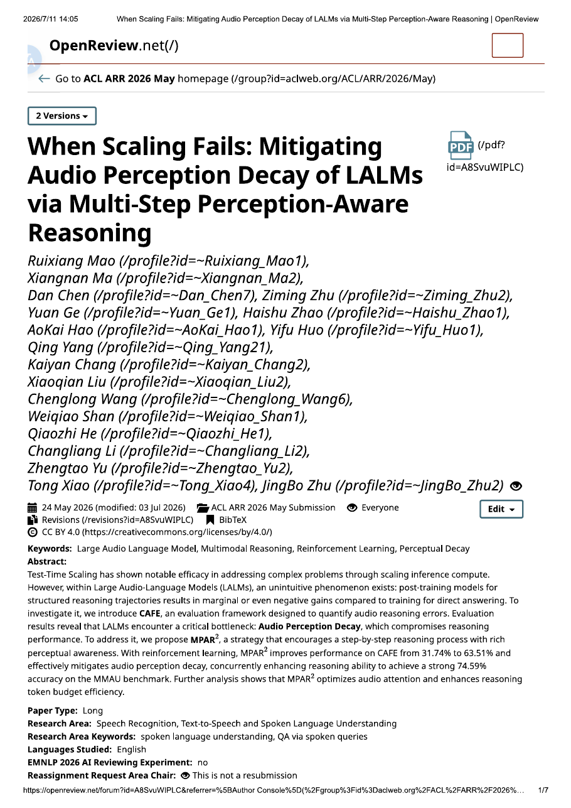
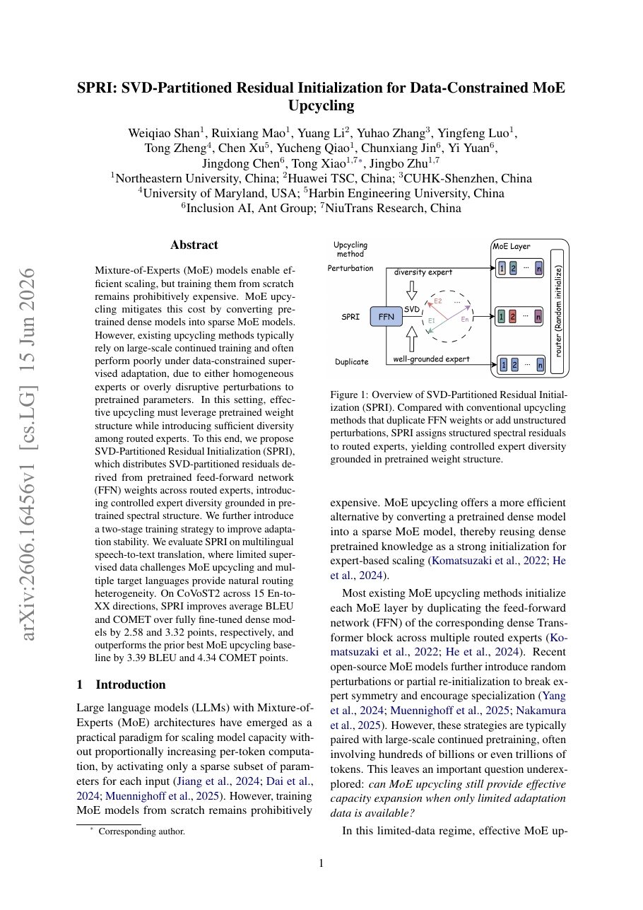
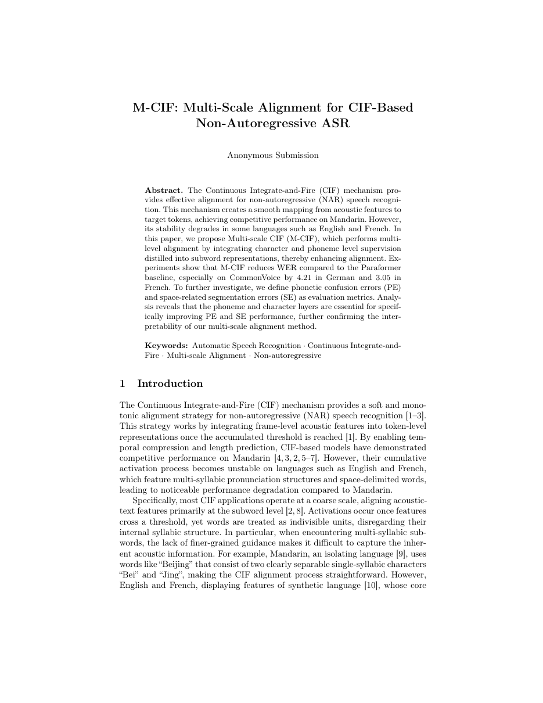

When Scaling Fails: Mitigating Audio Perception Decay of LALMs via Multi-Step Perception-Aware Reasoning
EMNLP 2026 Main Conference
A multi-step reasoning strategy that keeps audio-language models grounded in the input sound.
Hi! I am a master's student in Computer Science at Northeastern University, working with the NEU NLP Lab.
Previously, I received my B.S. in Information Management and Information Systems from Xiangtan University.
My research focuses on audio-language model understanding and reasoning, full-duplex speech interaction, and speech recognition and translation. I am also interested in efficient model adaptation, including MoE upcycling.

EMNLP 2026 Main Conference
A multi-step reasoning strategy that keeps audio-language models grounded in the input sound.

EMNLP 2026 Main Conference
A structured initialization method for creating diverse sparse experts from dense models with limited data.

CCL 2026
Multi-scale acoustic-text alignment for robust non-autoregressive speech recognition.
If you would like to chat about research or potential collaboration, feel free to reach out.